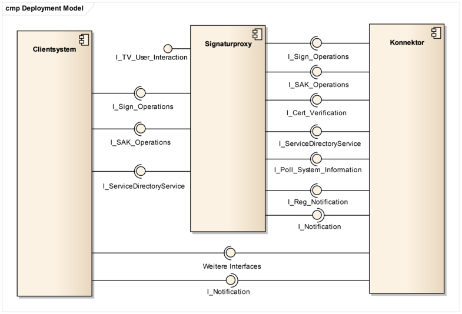
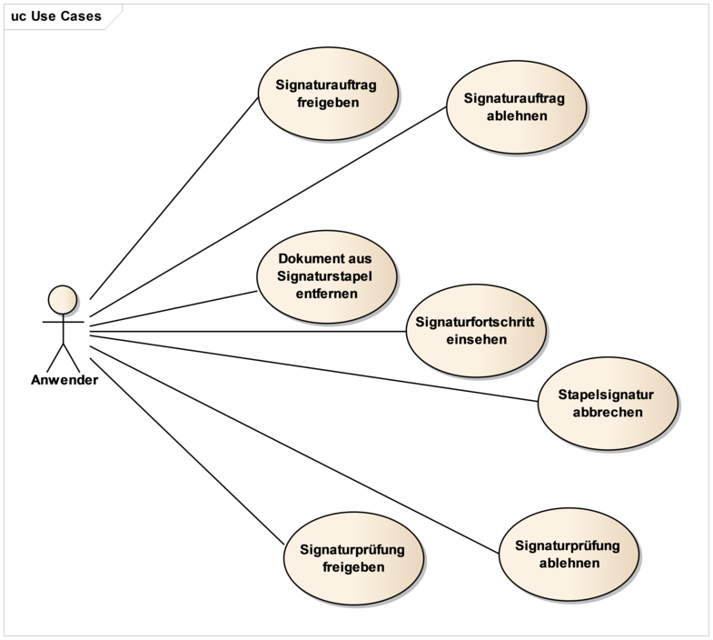
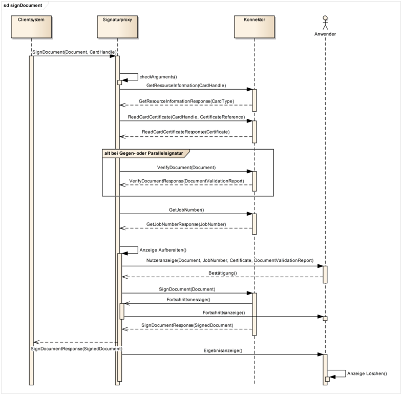
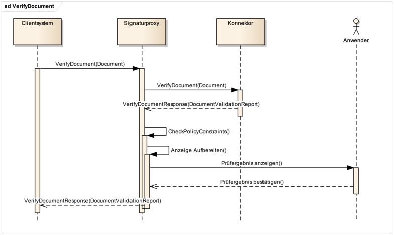
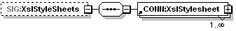
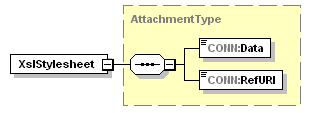

Elektronische Gesundheitskarte und Telematikinfrastruktur
Spezifikation
Konnektor Signaturproxy
| Version | 1.7.0 |
| Revision | 571790 |
| Stand | 02.03.2020 |
| Status | freigegeben |
| Klassifizierung | öffentlich |
| Referenzierung | gemSpec_Kon_SigProxy |
Änderungen zur Vorversion
Anpassungen des vorliegenden Dokumentes im Vergleich zur Vorversion können Sie der nachfolgenden Tabelle entnehmen.
Dokumentenhistorie
| Version |
Stand |
Kap./ Seite |
Grund der Änderung, besondere Hinweise |
Bearbeitung |
|---|---|---|---|---|
| Initialversion Online-Produktivbetrieb (Stufe 2.1) |
||||
| 1.1.0 |
02.08.17 |
freigegeben |
gematik |
|
| 05.12.17 |
Änderungsliste P15.1 |
gematik |
||
| 1.3.0 |
18.12.17 |
freigegeben |
gematik |
|
| 1.4.0 | 14.05.18 | Anpassungen auf Grundlage von P 15.2 |
gematik |
|
| 1.5.0 | 15.05.19 | Einarbeitung P18.1 |
gematik |
|
| Einarbeitung P17.4 | ||||
| 1.6.0 |
28.06.19 |
freigegeben |
gematik |
|
| 1.7.0 | 02.03.20 | freigegeben | gematik |
Die vorliegende Spezifikation definiert die Anforderungen zu Herstellung, Test und Betrieb des Konnektor Signaturproxy.
Der Signaturproxy ist eine Komponente, die zwischengeschaltet auf der Kommunikationsstrecke zwischen Client-System und Konnektor dafür sorgt, dass die zu signierenden oder zu prüfenden Dokumente dem Nutzer angezeigt werden.
Herstellern von Primärsystemen ist es freigestellt, die Ansichtsfunktion umzusetzen, und auf die Verwendung des Signaturproxy zu verzichten. Bei der Umsetzung der Ansichtsfunktion im Primärsystem sollte sich der Primärsystemhersteller an der Spezifikation des Signaturproxy richten.
Das Dokument ist maßgeblich für die Hersteller von Konnektoren und für die Primärsystemhersteller.
Dieses Dokument enthält normative Festlegungen zur Telematikinfrastruktur des deutschen Gesundheitswesens. Der Gültigkeitszeitraum der vorliegenden Version und deren Anwendung in Zulassungs- oder Abnahmeverfahren wird durch die gematik GmbH in gesonderten Dokumenten (z. B. Dokumentenlandkarte, Produkttypsteckbrief, Leistungsbeschreibung) festgelegt und bekannt gegeben.
Schutzrechts-/Patentrechtshinweis
Die nachfolgende Spezifikation ist von der gematik allein unter technischen Gesichtspunkten erstellt worden. Im Einzelfall kann nicht ausgeschlossen werden, dass die Implementierung der Spezifikation in technische Schutzrechte Dritter eingreift. Es ist allein Sache des Anbieters oder Herstellers, durch geeignete Maßnahmen dafür Sorge zu tragen, dass von ihm aufgrund der Spezifikation angebotene Produkte und/oder Leistungen nicht gegen Schutzrechte Dritter verstoßen und sich ggf. die erforderlichen Erlaubnisse/Lizenzen von den betroffenen Schutzrechtsinhabern einzuholen. Die gematik GmbH übernimmt insofern keinerlei Gewährleistungen.
Spezifiziert werden in dem Dokument die von dem Konnektor Signaturproxy bereitgestellten (angebotenen) Schnittstellen. Benutzte Schnittstellen werden hingegen in der Spezifikation desjenigen Produkttypen beschrieben, der diese Schnittstelle bereitstellt. Auf die entsprechenden Dokumente wird referenziert (siehe auch Anhang A5).
Die vollständige Anforderungslage für den Konnektor Signaturproxy ergibt sich aus weiteren Konzept- und Spezifikationsdokumenten, diese sind in dem Produkttypsteckbrief des Produkttyps Konnektor verzeichnet.
Anforderungen als Ausdruck normativer Festlegungen werden durch eine eindeutige ID in eckigen Klammern sowie die dem RFC 2119 [RFC2119] entsprechenden, in Großbuchstaben geschriebenen deutschen Schlüsselworte MUSS, DARF NICHT, SOLL, SOLL NICHT, KANN gekennzeichnet.
Sie werden im Dokument wie folgt dargestellt:
<AFO-ID> - <Titel der Afo>
Text / Beschreibung
[<=]
Dabei umfasst die Anforderung sämtliche zwischen Afo-ID und Textmarke [<=] angeführten Inhalte.
Der Signaturproxy hat zwei Hauptaufgaben: die erste Aufgabe besteht darin, eine lokale und optionale Anzeige für die Signaturerstellung und Signaturprüfung zur Verfügung zu stellen, die zweite Aufgabe ist die Weiterleitung des Signaturauftrages an den Konnektor und der Signaturantwort an das Primärsystem.
Um die lokale Anzeige für die Signaturerstellung und Signaturprüfung zu realisieren, ermittelt der Signaturproxy alle Informationen, die für die Anzeige notwendig sind und bereitet die Informationen sowie das Dokument zur Anzeige auf. Im Rahmen der Anzeige bietet der Signaturproxy dem Anwender Möglichkeiten, mit dem Signaturvorgang zu interagieren.
Der Signaturproxy stellt dabei keine „sichere“ Anzeige im Sinne des Signaturgesetzes (SigG/SigV) bereit, wie es der sicherheitsbestätigte xTV in älteren Versionen der Konnektorspezifikation getan hat. Erhalten geblieben sind die beiden Qualitätsniveaus der Anzeige, die jetzt als einfache und vollständige Anzeige bezeichnet werden.
Da durch die aktuelle Gesetzeslage (eIDAS-Verordnung) für die Erstellung einer QES keine sichere Anzeigekomponente notwendig ist, kann sich der Anwender auch mit anderen Mitteln als dem hier spezifizierten Signaturproxy eine hinreichende Sicherheit über den Gegenstand seiner Signatur verschaffen. Der Einsatz des Signaturproxy ist für den Leistungserbringer/Primärsystemhersteller optional und die Anzeigefunktion kann im aufrufenden Primärsystem realisiert werden. Die Bereitstellung des Signaturproxy ist für den Konnektorhersteller obligatorisch.
Um die Weiterleitung des Signaturauftrages an den Konnektor zu implementieren, befindet sich der Signaturproxy im Informationsfluss zwischen dem aufrufenden Primärsystem und dem Konnektor. Der Signaturauftrag wird so vom Primärsystem an den Signaturproxy übergeben und von dem Signaturproxy an den Konnektor. Die Antwort des Konnektors wird genauso über den Signaturproxy an das Primärsystem zurückgemeldet.
Der Signaturproxy ist als lokale Anzeigesoftware zum Einsatz auf dem Clientrechner vorgesehen. Daher sollen seine Schnittstellen zum Clientsystem nur auf dem lokalen Interface (localhost) zur Verfügung stehen. Für den Konnektor stellt sich der Signaturproxy wie ein Clientsystem dar. Da der Signaturproxy den Kontext (Clientsystem-ID, Arbeitsplatz-ID, Mandant) aus dem Aufruf weiterreicht, hat der Signaturproxy keine eigene Entität im Informationsmodell des Konnektors.
Durch die in diesem Dokument beschriebene Definition des Signaturproxy soll vor allem erreicht werden, dass die Anzeigefunktionalität für die zu signierenden Dokumente sowie bestimmte Validierungsaspekte dieser Dokumente aus dem Konnektor entfernt und in den externen Signaturproxy verlagert werden. In diesem Zusammenhang wird die Komplexität des Konnektors reduziert, die Performance des Signaturvorgangs verbessert und der Evaluierungsaufwand für den Konnektor verringert.
In der Abbildung 1 sind sowohl die am Signaturproxy angebotenen als auch die vom Signaturproxy benutzten Schnittstellen dargestellt. Die Zuordnung der einzelnen Operationen zu den entsprechenden Schnittstellen erfolgt in den Kapiteln 2.4.1 und 2.4.2.

Abbildung 1: Schnittstellen des Signaturproxy
Folgende Operationen des Konnektors werden vom Signaturproxy verwendet:
Der Notification-Mechanismus ist für alle Clientsysteme (einschließlich Signaturproxy) gleich: Beim Erstellen einer Subscription wird die Senke für die Events dieser Subscription angegeben. Dadurch kann der Konnektor die Events an die entsprechenden Systeme zustellen, z. B. an das Primärsystem oder an den Signaturproxy.
Folgende Operationen vom Signaturproxy angeboten:

Abbildung 2: Anwendungsfälle für den Signaturproxy
Die in der Abbildung 2 dargestellten interaktiven Anwendungsfälle werden durch folgende logische Operationen umgesetzt:
Die in diesem Kapitel enthaltenen Ablaufdiagramme haben einen informativen Charakter. Die abgebildeten Parameter können eine Untermenge aller erlaubten Parameter darstellen. Die Aufrufe der spezifizierten Methoden sind mit dem definierten Namen identifiziert, alle übrigen Abläufe sind rein informativ umschrieben.

Abbildung 3: Ablauf der Operation sign_Document

Abbildung 4: Ablauf der Operation verify_Document
Dokumentformate
Mit dem Aufruf einer Operation, die Dokumente verarbeitet, muss durch den Aufrufer festgelegt werden können, um welches Dokumentenformat es sich handelt, damit die unterschiedlichen Formate zur Verarbeitung und etwaigen Anzeige unterschieden werden können. Die nicht-XML-Formate werden dabei nach MIME-Typ-Klassen unterschieden:
Folgende Bezeichner werden verwendet:
Alle_DocFormate: XML, PDF/A, Text, TIFF, Binär
nonQES_DocFormate: XML, PDF/A, Text, TIFF, Binär
QES_DocFormate: XML, PDF/A, Text, TIFF
Für nonQES_DocFormate wird, trotz Gleichheit zu Alle_DocFormate, ein eigener Referenzbezeichner verwendet, da sich diese Liste noch ändern könnte. TIFF wird durch [gemKPT_Arch_TIP] nicht für die nonQES verlangt. Die Unterstützung dieses Formats für nonQES bedeutet jedoch keinen Mehraufwand, da die Routinen durch QES bereits implementiert sind und nachgenutzt werden können.
Die QES_DocFormate müssen hinsichtlich ihrer Anzeigequalität im Signaturproxy weiter verfeinert werden:
QES_DF_BestView: Dokumentformate, die im Signaturproxy vollständig angezeigt werden können
DF_BV_PDFA: PDF/A-2b [PDF/A-2] unter Beachtung der in Anhang C festgelegten Einschränkungen
DF_BV_Text: Text-Dokument (Zeichensatz ISO-8859-15 oder UTF-8)
DF_BV_TIFF: TIFF 6.0: Part 1 Baseline TIFF [TIFF6] unter Beachtung der in Anhang C festgelegten Einschränkungen
DF_BV_XML: Liste aller vollständig anzeigbaren XML-Dokumentformate. Aktuell wird für keine XML-Formate die vollständige Anzeigbarkeit garantiert.
QES_DF_View: Dokumentformate, die im Signaturproxy ohne den Anspruch auf Korrektheit und Vollständigkeit angezeigt werden können (bestmögliche Darstellung mit entsprechendem Warnhinweis, siehe TIP1-A_4650 TUC_SIG_153). Dies umfasst alle Dokumente, die zwar zur Gruppe der QES_DocFormate gehören, aber im Einzelfall in konkreten Teilen von den unter QES_DF_BestView benannten Formaten abweichen (beispielsweise unerlaubte Subelemente beinhalten).
TIP1-A_5150
Der Signaturproxy MUSS bei der QES-Erstellung und QES-Prüfung grundsätzlich alle gemäß QES_DocFormate definierten Dokumentformate anzeigen können.
Der Signaturproxy MUSS Dokumentformate gemäß QES_DF_BestView vollständig anzeigen können.
Bei der Anzeige von QES_DF_View Dokumenten MUSS der Signaturproxy zusätzlich eine Warnung anzeigen, dass das aktuell angezeigte Dokument nicht vollständig angezeigt werden kann.
<=TIP1-A_5531
Der Signaturproxy MUSS für die Anzeige von XML-Dokumenten einen XSL-Transformationsprozess bereitstellen, der aus einem XML-Dokument und mindestens einem XSL-Stylesheet ein PDF-Dokument für die Anzeige erzeugt. Der Signaturproxy KANN einen Transformationsprozess auf der Basis mehrerer anstelle eines Stylesheets anbieten.
<=Der Default-Fall ist das Erstellen von PDF-Dateien.
Der Erstellungsprozess der PDF-Dateien ist zweistufig. Aus dem XML-Dokument wird mit Hilfe des Stylesheets ein neues XML-Dokument erzeugt, welches einen FormatingObjekt-Baum im Namensraum http://www.w3.org/1999/XSL/Format erzeugt. Aus diesem Baum wird im zweiten Schritt über einen Formating Objects Processsor (z.B. Apache FOP) eine PDF-Datei erzeugt.
Im Fall der HTML-Generierung liegt es in der Verantwortung des Herstellers, für eine geeignete Dokumentierung des optionalen Features zu sorgen, die eine Nutzung ermöglicht.
A_18225
Der Signaturproxy MUSS zu jeder durch den Konnektor umgesetzten Signaturrichtlinie eine vollständige Anzeige und PDF-Erzeugung umsetzen und bei der Signaturerstellung und Prüfung anwenden. <=
TIP1-A_5687
Der Signaturproxy MUSS
XSLT in der Version 2.0 [XSLT], Conformance „basic XSLT processor“,
XPath in der Version 2.0 [XPath],
Von den XSL-FO-Objects und -Properties aus XSL 1.1 mindestens die in Tabelle TAB_SIG_801 aufgeführten
unterstützen.
<=TIP1-A_5688
Der Signaturproxy SOLL XSL-FO gemäß XSL 1.1 [XSL] unterstützen.
<=TIP1-A_5404
Der Signaturproxy MUSS den vom Clientsystem übergebenen Kurztext (ShortTextClientsystem) zur Identifikation des Dokuments anzeigen.
<=TIP1-A_5532
Der Signaturproxy KANN die Anzeige von XML-Dokumenten per HTML/CSS anbieten. Hierfür muss er einen XSL-basierten Transformationsprozess bereitstellen, der aus einem XML-Dokument und einem oder mehreren Stylesheets die HTML/CSS-Darstellung erzeugt.
<=TIP1-A_5689
Die Anforderungen an die Stylesheets für die HTML/CSS-Darstellung MÜSSEN so dokumentiert werden, dass eine Erstellung der Stylesheets auf Basis der Dokumentation erfolgen kann, falls der Signaturproxy die Anzeige von XML-Dokumenten per HTML/CSS anbietet.
<=TIP1-A_5668
Der Signaturproxy MUSS für alle Aufrufe beim Konnektor den Context (Clientsystem-ID, Arbeitsplatz-ID, Mandant, ggf. User) verwenden, den er vom Clientsystem erhalten hat.
<=TIP1-A_5669
Der Signaturproxy MUSS in der Verbindung zum Primärsystem ausschließlich auf dem localhost-Interface des Primärsystems lauschen.
<=TIP1-A_5686
Der Signaturproxy MUSS Verbindungen auf dem localhost-Interface des Primärsystems ohne Transportsicherung vom Clientsystem annehmen.
<=Der Proxy muss zusammen mit dem aufrufenden Clientsystem auf einer Hardware installiert werden. Dadurch soll sowohl die lokale Anzeige sichergestellt werden, als auch eine sichere und effiziente Übergabe des Signaturauftrags vom Clientsystem an den Signaturproxy. Das Interface des Signaturproxy darf nicht über NAT/PAT anderen Systemen zugänglich gemacht werden.
Durch die localhost-Bindung laufen Clientsystem und Signaturproxy auf dem gleichen System und innerhalb eines Rechners ist eine TLS-Absicherung unnötig. Explizit ausgeschlossen wird sie nicht. Die LE-Umgebung wird als nicht kompromittiert angenommen. Daher ist auch eine Authentifizierung unnötig.
TIP1-A_4634
Der Signaturproxy MUSS in der Verbindung zum Konnektor alle Verbindungseinstellungen und Authentifizierungsmechanismen unterstützen, die vom Konnektor an den verwendeten Schnittstellen angeboten werden.
<=TIP1-A_5692
Der Vertrauensanker für die TLS-Verbindungen zum Konnektor MUSS während der Installation vom Signaturproxy mit installiert werden (Ausstellerzertifikate von ID.AK.AUT).
<=TIP1-A_5693
Beim Vertrauensankerwechsel MUSS der Hersteller des Signaturproxy eine Installationsroutine herausbringen, die den neuen Vertrauensanker unter Erhalt der bestehenden Konfiguration auf den Clientsystemen installiert.
<=Falls der Administrator keine Transportsicherung im LAN einschaltet, so gilt dieses auch für Verbindung zwischen Signaturproxy und Konnektor.
Da in dieser Verbindung der Konnektor der Server ist, wird die TLS-Verbindung über die Anforderungen an den Konnektor geregelt.
Für den Signaturproxy gelten die gleichen Authentisierungsverfahren wie für alle Clientsysteme. Wenn der Administrator TLS mit Clientauthentifizierung auswählt, muss er entsprechende Zertifikate im Signaturproxy konfigurieren.
TIP1-A_5670
Der Hersteller des Signaturproxys MUSS im Handbuch den Administrator darüber informieren, dass die qualifizierte Signatur auch dann rechtlich verbindlich bleibt, wenn die Verbindung zwischen Signaturproxy und Konnektor nicht durch Verschlüsselung und gegenseitige Authentisierung gesichert ist. Der Hersteller des Signaturproxys MUSS im Handbuch den Administrator über die daraus folgenden Risiken informieren.
<=
TIP1-A_4650
Der Signaturproxy MUSS den technischen Use Case TUC_SIG_153 “Dokumentenliste im Signaturproxy anzeigen” umsetzen.
Tabelle 1: TAB_SIG_131 - TUC_SIG_153 „Dokumentenliste im Signaturproxy anzeigen“
Element |
Beschreibung |
|---|---|
Name |
TUC_KON_153 „Dokumentenliste im Signaturproxy anzeigen“ |
Beschreibung |
Die zu signierenden Dokumente werden als Liste in der Anzeigekomponente dargestellt. Der Anwender kann sich die Dokumenteninhalte und Zertifikate von der Signaturkarte anzeigen lassen und gegebenenfalls Dokumente vom weiteren Signaturvorgang ausschließen. |
Auslöser |
Operation SignDocument |
Vorbedingungen |
Keine |
Eingangsdaten |
Für XML-Dokumente:
|
Komponenten |
Signaturproxy |
Ausgangsdaten |
|
Standardablauf |
Die Liste der zu signierenden Dokumente wird angezeigt.
Für XML-Dateien, für die dem Signaturproxy keine XSL-Transformationsdatei zur Verfügung steht (keine wurde übergeben), zeigt der Signaturproxy unveränderte XML-Daten an, die zur Erhöhung der Lesbarkeit formatiert sein können. Für QES verpflichtend: Dokumente, die nicht auf vollständige Anzeigbarkeit geprüft sind oder nicht vollständig anzeigbar sind („BestView = no“), werden in der Liste mit der entsprechenden Warnmeldung versehen. Der Nutzer muss die Prüfung wenn möglich anstoßen können. Je nach Modus für die Anzeige verhält sich der Signaturproxy folgendermaßen:
(siehe auch TIP1-A_4662 Bestätigungsmodus: Warten bei PIN-Eingabe).
Falls bei der Prüfung vorhandener Signaturen aus den bisherigen Prüfschritten das VerificationResult INCONCLUSIVE bzw. INVALID gemäß TAB_KON_593 bestimmt wurde, muss der Signaturproxy automatisch in den Confirmed-Mode wechseln und auf die Bestätigung des Nutzers warten. Ist bei der Prüfung einer Signatur das VerificationResult INVALID so muss der Signaturproxy den Benutzer darauf hinweisen, dass bei der Prüfung enthaltener Signaturen Fehler aufgetreten sind und die Erstellung der Gegensignatur nicht empfohlen wird. Bei der Anzeige des Dokumenteninhalts eines nicht vollständig anzeigbaren Dokuments muss dem Benutzer ein Warnhinweis ausgegeben werden, dass es sich um eine unvollständige Anzeige handelt. (siehe auch TIP1-A_4664 Ansichtsmodus: Allein die PIN-Eingabe am Kartenterminal ist maßgeblich). |
Varianten/Alternativen |
Der Nutzer kann den gesamten Signaturvorgang während der Anzeige des Signaturproxy abbrechen. Hierbei sind die gleichen Regeln anzuwenden wie im Fehlerfall. |
Fehlerfälle |
(-> 2)(Es handelt sich um eine Fehlermeldung des 2. Schrittes im Standardablauf.) Fehler bei Anzeige im Signaturproxy: 4122 |
Nichtfunktionale Anforderungen |
keine |
Zugehörige Diagramme |
keine |
Tabelle 2: TAB_SIG_589 Übersicht Fehlercodes für „Dokumentenliste im Signaturproxy anzeigen“
Fehlercode |
ErrorType |
Severity |
Fehlertext |
|---|---|---|---|
Neben den Fehlercodes der aufgerufenen technischen Use Cases können folgende weitere Fehlercodes auftreten: |
|||
4122 |
Security |
Error |
Fehler bei Anzeige im Signaturproxy |
TIP1-A_4656
Die Anzeige bei einer QES-Signaturerstellung MUSS folgende Inhalte umfassen:
Hinweis zu Punkt (h): Die Eigenschaft ergibt sich direkt aus dem Aufrufparameter dss:ReturnUpdatedSignature:
TIP1-A_5683
Der Signaturproxy MUSS dem Benutzer bei QES-Signaturerstellung die Jobnummer unabhängig vom Parameter TvMode immer anzeigen.
Der Signaturproxy DARF dem Benutzer bei nonQES-Signaturerstellung die Jobnummer NICHT anzeigen, wenn der Parameter TvMode=NONE ist.
Der Signaturproxy MUSS sich eine Jobnummer vom Konnektor holen, wenn er keine als Parameter vom Primärsystem bekommen hat.
<=TIP1-A_4657
Der Signaturproxy MUSS dem Benutzer einen Hinweis auf eine verminderte Vertrauenswürdigkeit der Algorithmen einer Signatur anzeigen, so wie sie im VerificationReport des Konnektors übermittelt wurde.
<=TIP1-A_4658
Bei der Erstellung einer Stapelsignatur im Ansichts- oder Bestätigungsmodus (Parameter TvMode=UNCONFIRMED bzw. CONFIRMED) MUSS der Signaturproxy dem Benutzer eine Liste der zu signierenden Daten und Dokumententypen anzeigen. Der Signaturproxy MUSS im Bestätigungsmodus dem Benutzer die Möglichkeit einer Deselektion von einzelnen Daten anbieten. Deselektierte Daten MÜSSEN von der Signaturerstellung ausgenommen werden.
<=TIP1-A_4659
Bei einer Stapelsignatur im Bestätigungs- und Ansichtsmodus (Parameter TvMode=CONFIRMED oder TvMode=UNCONFIRMED) MUSS der Signaturproxy den Fortschritt bei der Signaturerzeugung erkennen lassen. Der Signaturproxy muss hierzu das Event SIG/SIGNDOC/NEXT_SUCCESSFUL abonnieren.
<=TIP1-A_4660
Die zu signierenden Dokumente einer Stapelsignatur MÜSSEN an den Konnektor in derselben Reihenfolge geschickt werden, in der sie in der Liste der zu signierenden Dokumente in dem Signaturproxy angezeigt werden.
<=TIP1-A_4661
Sind in der Liste der zu signierenden Daten bei der Erstellung einer Stapelsignatur unterschiedliche Dokumententypen vorhanden, so SOLL der Signaturproxy diese Daten so kennzeichnen, dass eine Unterscheidung der vorhandenen Dokumententypen des Stapels optisch leicht möglich ist.
<=TIP1-A_4662
Wird der Signaturproxy im Bestätigungsmodus betrieben, so MUSS der Signaturproxy auf eine Freigabe des Signaturvorganges durch den Anwender warten, bevor der Signaturauftrag an den Konnektor gesendet wird. Wird die Freigabe des Signaturvorganges über den Signaturproxy nicht während der konfigurierten Zeitspanne durch den Benutzer erteilt, so MUSS die der Signaturproxy die Signaturerzeugung mit dem Fehler 4116 "Timeout (Benutzer)" abbrechen.
<=
TIP1-A_4663
Der Signaturproxy MUSS im Bestätigungsmodus dem Benutzer vor Beginn des Signaturvorganges die Möglichkeit zum Abbruch (Fehler 4049 "Abbruch durch den Benutzer") des Vorganges bieten.
<=
TIP1-A_5671
Der Signaturproxy MUSS während der Stapelsignaturverarbeitung im Bestätigungs- und Ansichtsmodus (Parameter TvMode=CONFIRMED oder TvMode=UNCONFIRMED) dem Benutzer die Möglichkeit zum Abbruch des Vorganges bieten.
<=TIP1-A_5680
Anzeigen im Signaturproxy MÜSSEN nach einem konfigurierbaren Zeitablauf gelöscht werden. Nach jeder Benutzerinteraktion MUSS der Timer neu gestartet werden. Wertebereich für den Timer: 10-300 sec. Defaultwert 30s. Für unterschiedliche Ansichten KÖNNEN unterschiedliche Timer verwendet werden.
<=TIP1-A_5681
Der Benutzer MUSS jede Anzeige durch eine Benutzerinteraktion löschen können.
<=TIP1-A_4664
Im Ansichtsmodus ist allein die PIN-Eingabe am Kartenterminal maßgeblich für die Bestätigung des Signaturvorganges. Das zu signierende Dokument MUSS im Signaturproxy solange für den Benutzer einsehbar bleiben, bis der Signaturauftrag vom Konnektor beantwortet wurde oder bis der Timer abgelaufen ist. Entscheidend ist dabei, welches der beiden Ereignisse zuerst eintritt.
<=TIP1-A_4665
Wird der Signaturproxy im Ansichtsmodus betrieben und alle Kurztexte aus der Liste der zu signierenden Dokumente können in dem Signaturproxy ohne Benutzerinteraktion auf einen Blick angezeigt werden, dann MUSS der Signaturproxy im angeforderten Ansichtsmodus bis zum konfigurierbaren Löschzeitpunkt der Anzeige verbleiben.
<=TIP1-A_4666
Passen nicht alle Kurztexte auf den Bildschirmbereich des Signaturproxy, so MUSS der Signaturproxy automatisch aus dem Ansichtsmodus in den Bestätigungsmodus umschalten.
<=TIP1-A_4668
Nach der Signaturerzeugung MUSS der Signaturproxy im Bestätigungs- und Ansichtsmodus das Ergebnis der Signaturerzeugung anzeigen. Im Bestätigungs- und Ansichtsmodus MUSS im Fehlerfall eine Bestätigung des Fehlers durch den Benutzer erfolgen. Der Benutzer MUSS sich im Bestätigungsmodus über den Signaturproxy die erzeugte(n) Signatur(en) anzeigen lassen können.
<=TIP1-A_4673
Die Anzeige im Falle der Signaturprüfung MUSS folgende Inhalte umfassen:
die Daten, auf die sich die Signatur bezieht (Kurztext, welcher das signierte Dokument kennzeichnet),
den Inhalt des Zertifikates auf dem beruhend signiert wurde sowie den Inhalt in die Signatur eingefügter Attributzertifikate,
das Ergebnis der Signaturprüfung und Zertifikatsprüfung,
einen aussagekräftigen Hinweis darauf, ob einer der bei der Signaturprüfung identifizierten Algorithmen nicht durch den Signaturdienst unterstützt wird und aus diesem Grund die Signatur nicht geprüft werden kann,
die Signaturart (QES / nonQES),
im Fall einer Gegensignatur, die Kennzeichnung als Gegensignatur und den Verweis auf die gegensignierte Signatur,
den zur Prüfung der Signatur verwendeten Signaturzeitpunkt als Lokalzeit
und, sofern der Benutzer es wünscht (per Benutzerinteraktion):
den Inhalt der signierten Daten
(das signierte Dokument, signierte Signaturen, signierte Attributzertifikate, weitere signierte Eigenschaften), wobei binäre Dokumente nicht angezeigt werden.
TIP1-A_5701
Falls bei der Signaturprüfung im Anzeigemodus (TvMode=UNCONFIRMED) das VerificationResult INCONCLUSIVE ermittelt wurde, KANN der Signaturproxy dem Nutzer die Möglichkeit geben, das Ergebnis INCONCLUSIVE in VALID oder INVALID umzuwandeln. Das resultierende Ergebnis wird im VerificationResult im Element SIG:HighLevelResult an das aufrufende Clientsystem zurückgegeben und der dazugehörige VerificationReport wird hierbei nicht verändert.
TIP1-A_5405-01
Der Signaturproxy MUSS im Ansichtsmodus (ParameterTvMode=UNCONFIRMED) den vom Clientsystem übergebenen Kurztext (ShortTextClientsystem) zur Identifikation des Dokuments anzeigen.
Der Signaturproxy MUSS den in der Signatur enthaltenen Kurztext (ShortTextSignature) extrahieren. Ist der ShortTextSignature nicht gleich dem ShortTextClientsystem, MUSS er imAnsichtsmodus (ParameterTvMode=UNCONFIRMED) als Zusatzinformation angezeigt werden. <=
TIP1-A_5690
Der Signaturproxy MUSS Clientsystemen den Basisdienst Signaturdienst (nonQES und QES) anbieten.
Tabelle 3: TAB_SIG_197 Basisdienst Signaturdienst (nonQES und QES)
Name |
SignatureService |
|
|---|---|---|
Version (KDV) |
Siehe Anhang D in der Konnektorspezifikation (WSDL-Version) |
|
Namensraum |
Siehe Anhang D in der Konnektorspezifikation |
|
Namensraum-Kürzel |
SIG für Schema und SIGW für WSDL |
|
Operationen |
Name |
Kurzbeschreibung |
SignDocument |
Dokument signieren |
|
VerifyDocument |
Signatur verifizieren |
|
WSDL |
SignatureService.wsdl |
|
Schema |
SignatureService.xsd |
|
TIP1-A_5672
Der Signaturproxy MUSS Clientsystemen die Basisanwendung Dienstverzeichnisdienst anbieten.
Tabelle 4: TAB_SIG_846 Basisanwendung Dienstverzeichnisdienst
Name |
SignaturproxyServiceDirectory |
|---|---|
Version |
Siehe Anhang D in der Konnektorspezifikation |
Namensraum |
Siehe Anhang D in der Konnektorspezifikation |
Namensraum-Kürzel |
CONN |
Operationen |
Lesen der vom Konnektor und Signaturproxy unterstützten Dienste |
WSDL |
Keine |
Schema |
ServiceDirectory.xsd |
TIP1-A_5673
Der Signaturproxy MUSS den technischen Use Case TUC_SIG_192 „Dokumentenvalidierung” umsetzen.
Tabelle 5: TAB_SIG_854 - TUC_SIG_192 „Dokumentenvalidierung“
| Element |
Beschreibung |
| Name |
TUC_SIG_192 „Dokumentenvalidierung“ |
| Beschreibung |
Dieser TUC validiert Dokumente der Dokumentenformate XML, PDF/A, Text und TIFF. |
| Auslöser |
Aufruf durch Signaturdienst |
| Vorbedingungen |
Keine |
| Eingangsdaten |
|
| Komponenten |
Signaturproxy |
| Ausgangsdaten |
Keine |
| Standardablauf |
Validierung der Dokumente auf Typkonformität Der Signaturproxy führt je nach Format des Dokuments eine der folgenden Prüfungen durch: A) XML-Dokumentvalidierung Im Fall eines XML-Dokuments prüft der Signaturproxy:
Über das XMP-Element <pdfaid:part xmlns:pdfaid="http://www.aiim.org/pdfa/ns/id/"> in den Metadaten des Dokuments wird die behauptete PDF/A Version bestimmt. Zu dieser PDF/A Version wird das Level B ohne weitere Einschränkungen geprüft (MUSS für PDF/A Version 1 und 2, KANN für PDF/A Version 3). C) TIFF-Dokumentvalidierung Der Signaturproxy prüft, ob das Dokument konform zu TIFF 6.0 [TIFF6], Part 1 Baseline TIFF ohne Einschränkungen ist. D) Text-Dokumentvalidierung Der Signaturproxy prüft die Konformität zum im Dokumentenformat vorgegebenen Character-Encoding. Der Signaturproxy prüft, dass keine Werte im Dokument enthalten sind, die gemäß übergebenem Dokumentformat nicht definiert sind. Für Binärdokumente findet keine Validierung statt. Hinweis: Byte-order-marks (BOM) sind im Rahmen von UTF-8 kodierten Dokumenten gemäß UTF8 Standard ([RFC3629], Kapitel 6) erlaubt, aber nicht notwendigerweise im Dokument vorhanden. |
| Nachbedingungen |
Keine |
| Varianten/Alternativen |
Keine |
| Fehlerfälle |
(A) Fehlerfälle bei XML-Dokumentvalidierung Wenn eines der übergebenen Schemata selbst nicht wohlgeformt oder invalide ist, wird Fehlercode 4026 gemeldet. Wenn das XML-Dokument nicht wohlgeformt ist, wird Fehlercode 4022 gemeldet. Das XML-Dokument ist nicht valide in Bezug auf das zur Validierung benutzte Schema: Fehlercode 4023. (B) Fehlerfälle bei PDF/A-Dokumentvalidierung Bei fehlgeschlagener Validierung: Fehlercode 4024, Dokumentformat = PDF/A (C) Fehlerfälle bei TIFF-Dokumentvalidierung Bei fehlgeschlagener Validierung: Fehlercode 4024, Dokumentformat = TIFF (D) Fehlerfälle bei Text-Dokumentvalidierung Bei fehlgeschlagener Validierung: Fehlercode 4024, Dokumentformat = Text |
| Nichtfunktionale Anforderungen |
Keine |
| Zugehörige Diagramme |
Keine |
Tabelle 6: TAB_SIG_847 Fehlercodes TUC_SIG_192 „Dokumentenvalidierung“
| Fehlercode |
ErrorType |
Severity |
Fehlertext |
|---|---|---|---|
| Neben den Fehlercodes der aufgerufenen technischen Use Cases können folgende weitere Fehlercodes auftreten: |
|||
| 4022 |
Security |
Error |
XML-Dokument nicht wohlgeformt |
| 4023 |
Security |
Error |
XML-Dokument nicht valide in Bezug auf XML-Schema |
| 4024 |
Security |
Error |
Formatvalidierung fehlgeschlagen (<Dokumentformat>) Der Parameter Dokumentformat kann die Werte XML, PDF/A, TIFF und Text annehmen. |
| 4026 |
Security |
Error |
XML-Schema nicht valide |
TIP1-A_5699
Der Signaturproxy MUSS den technischen Use Case TUC_SIG_193 „Anzeigbarkeit des Dokuments prüfen und herstellen“ umsetzen.
Tabelle 7: TAB_SIG_856 - TUC_SIG_193 „Anzeigbarkeit des Dokuments prüfen und herstellen“
Element |
Beschreibung |
Name |
TUC_SIG_193 „Anzeigbarkeit des Dokuments prüfen und herstellen” |
Beschreibung |
Dieser TUC prüft für die QES_DocFormate, ob der Dokumenteninhalt Signaturproxy vollständig angezeigt werden kann (d.h. ob es sich um ein QES_DF_BestView-Dokument handelt). |
Auslöser |
Aufruf durch Signaturdienst |
Vorbedingungen |
Keine |
Eingangsdaten |
Optional für XML-Dokumente:
|
Komponenten |
Signaturproxy |
Ausgangsdaten |
|
Standardablauf |
Diese Prüfungen weisen nach, dass das konkrete Dokument zur Gruppe QES_DF_BestView gehört. Dabei werden neben den hier ausgewiesenen Prüfungen weitere Vorgaben bezüglich der einzelnen Dokumentformate in Anhang C getroffen. A) XML-Dokumentprüfung und XSL-Transformation Die Konformität des XML-Dokuments zu DF_BV_Text wird geprüft. Ist diese Prüfung erfolgreich, kann das XML-Dokument vollständig angezeigt werden. Die Konformität des PDF/A-Dokument zu DF_BV_PDFA wird geprüft. Ist diese Prüfung erfolgreich, kann das PDF/A-Dokument vollständig angezeigt werden.
Die Konformität des TIFF-Dokuments zu DF_BV_TIFF wird geprüft. Ist diese Prüfung erfolgreich, kann das TIFF-Dokument vollständig angezeigt werden.
Die Konformität des Text-Dokuments zu DF_BV_TEXT wird geprüft. Ist diese Prüfung erfolgreich, kann das Text-Dokument vollständig angezeigt werden. |
Nachbedingungen |
Keine |
Varianten/Alternativen |
Keine |
Fehlerfälle |
Bei der Dokumentenvalidierung protokolliert der TUC alle aufgetretenen Fehler im Rückgabewert DocumentValidation. (A) Fehlerfälle bei XML-Dokumentvalidierung und XSL-Transformation Bei fehlgeschlagener Validierung: Fehlercode 4024, Dokumentformat = XML Wenn die XSL-Transformation nicht durchgeführt werden konnte: Fehlercode 4195 (B) Fehlerfälle bei PDF/A-Dokumentvalidierung Bei fehlgeschlagener Validierung: Fehlercode 4024, Dokumentformat = PDF/A (C) Fehlerfälle bei TIFF-Dokumentvalidierung Bei fehlgeschlagener Validierung: Fehlercode 4024, Dokumentformat = TIFF (D) Fehlerfälle bei Text-Dokumentvalidierung Bei fehlgeschlagener Validierung: Fehlercode 4024, Dokumentformat = Text |
Nichtfunktionale Anforderungen |
Keine |
Zugehörige Diagramme |
Keine |
Tabelle 8: TAB_SIG_857 Fehlercodes TUC_SIG_193 „Anzeigbarkeit des Dokuments prüfen und herstellen“
Fehlercode |
ErrorType |
Severity |
Fehlertext |
|---|---|---|---|
Neben den Fehlercodes der aufgerufenen technischen Use Cases können folgende weitere Fehlercodes auftreten: |
|||
4024 |
Security |
Error |
Formatvalidierung fehlgeschlagen (<Dokumentformat>) Der Parameter Dokumentformat kann die Werte XML, PDF/A, TIFF und Text annehmen. |
4195 |
Security |
Error |
Fehler bei XSL-Transformation |
TIP1-A_4631
Der Signaturproxy MUSS als Anzeigekomponente auf dem Arbeitsplatz des Benutzers einsetzbar sein.
Der Signaturproxy MUSS die folgenden Betriebssysteme (32- und 64-Bit-Varianten) in allen durch deren Hersteller gepflegten Versionen zum Zeitpunkt der Zulassung (Festlegung der Betriebssystemversionen wird im Rahmen der Zulassung getroffen) unterstützen:
Windows
Windows Server
Red Hat Enterprise Linux
Suse Linux Enterprise
Ubuntu Linux LTS
MAC OS X
Es MUSS eine Terminal-Server-Lösung unterstützt werden.
<=Für den Fall, dass die Lösung zur Unterstützung der geforderten Clientsysteme auf einer betriebssystemabstrahierenden Schicht aufsetzt (z. B. Java SE), liegt die Bereitstellung der abstrahierenden Schicht als Teil der Lösung in der Verantwortung des Herstellers. Es kann beispielsweise nicht davon ausgegangen werden, dass in den Arztpraxen eine bestimmte Java-Laufzeitumgebung (JRE) installiert ist.
Da der Signaturproxy eine optionale Komponente ist, kann die Ansichtsfunktion auch im Primärsystem umgesetzt werden.
Bei der hier vorgeschlagenen Lösung wird der Signaturproxy vom Primärsystem unter Angabe des vom Primärsystem vorgegebenen und verwalteten Listener-Port gestartet. Somit verwaltet das Primärsystem die Ports.
TIP1-A_5685
Der Signaturproxy MUSS sich bei der Softwareergonomie nach der DIN EN ISO 9241 richten.
<=TIP1-A_5695
Der Signaturproxy KANN SOAP Message Transmission Optimization Mechanism (MTOM) gemäß [MTOM] unterstützen.
Wenn der Signaturproxy MTOM unterstützt, MUSS MTOM per Konfiguration an und abschaltbar sein.
Wenn der Signaturproxy MTOM unterstützt, MUSS er, vergleichbar dem Einsatz des Attributs wsp:Optional="true" einer MTOM Serialization Policy Assertion [WS-MTOMPolicy], genau dann MTOM für die Antwortnachricht verwenden, wenn entweder
TIP1-A_5684
Der Signaturproxy MUSS Fehlermeldungen, die im Rahmen einer Operation auftreten, an das Client-System mittels gematik-SOAP-Faults melden.
<=TIP1-A_5691
Der Signaturproxy MUSS spezifizierte Fehler protokollieren können.
<=TIP1-A_5674-01
Der Signaturdienst des Signaturproxy MUSS an der Clientschnittstelle eine an [OASIS-DSS] angelehnte Operation SignDocument anbieten.
Tabelle 9: TAB_SIG_848 Operation SignDocument (nonQES und QES)
| Name |
SignDocument |
|
|---|---|---|
| Beschreibung |
Die Funktionalität der Methode ist identisch zu der Funktionalität von [gemSpec_Kon#AB_KON_065]. |
|
| Aufrufparameter |
Die Parameter der Methode sind identisch mit den Parametern von [gemSpec_Kon#TAB_KON_065]. Die unterschiedliche Interpretation bestimmter Parameter wird nachfolgend erläutert. |
|
| Name |
Beschreibung |
|
| TvMode |
Legt das Verhalten des Signaturproxy für den SignRequest-Stapel fest. Erlaubte Werte: CONFIRMED (Bestätigungsmodus): Unter Nutzung des ShortText-Attributes aus den SIG:Document-Elementen werden die zu signierenden Dokumente im Signaturproxy angezeigt. Der Benutzer kann Dokumente durch Deselektion von der Signatur ausschließen und sich den Inhalt einzelner zu signierender Dokumente anzeigen lassen. Der Signaturvorgang wird erst nach einer Bestätigung durch den Benutzer im Signaturproxy gestartet. UNCONFIRMED (Ansichtsmodus): Im Vergleich zum Bestätigungsmodus wird nicht auf eine Bestätigung des Signaturvorgangs durch den Benutzer im Signaturproxy gewartet. Eine Deselektion einzelner zu signierender Dokumente durch den Benutzer ist nicht möglich. NONE Keine Anzeige im Signaturproxy. Dieser Wert ist nur für nonQES erlaubt. Wenn der Parameter bei QES auf NONE gesetzt wird, gibt der Signaturproxy einen Fehler 4248 zurück. (siehe weitere Anzeige gemäß TIP1-A_4656: Anzeige verpflichtender Parameter bei Signaturerstellung). |
|
| SIG: JobNumber |
Optional: Die Nummer des Jobs, unter der der nächste Signaturvorgang gestartet wird. |
|
| sp:GenerateUnder SignaturePolicy |
Über den Parameter wird für alle im Konnektor eingebauten Signaturrichtlinien eine vollständige Anzeige und PDF-Aufbereitung ausgelöst. |
|
| SIG:ViewerInfo |
Enthält Informationen zur Anzeigeaufbereitung in Form von Stylesheets. Die Struktur dieses Elementes ist identisch zur Struktur beschrieben in [gemSpec_Kon#TAB_KON_065] und die eventuellen Unterschiede sind nachfolgend erläutert. Für definierte XML-Formate gemäß DF_BV_XML DARF dieses optionale Element NICHT vorhanden sein. Das zur Anzeige zu verwendende Stylesheet wird hierbei vom Signaturproxy durch das erkannte Format des XML-Dokuments bestimmt. |
|
| SIG:XslStylesheets |
Optionale Liste von XSL-Stylesheets zur Aufbereitung des XML-Dokuments für die Anzeige. Hierbei MUSS das Haupt-Stylesheet als erstes Element übergeben werden. |
|
|   |
||
| CONN:XslStylesheet |
Dieses Element enthält ein base64-codiertes Stylesheet im CONN:Data-Element und eine das Stylesheet identifizierende URI im CONN:RefURI-Element. |
|
| Rückgabe |
Die Rückgabewerte der Methode sind identisch mit den Rückgabewerten von [gemSpec_Kon#TAB_KON_065]. Die Unterschiedliche Interpretation bestimmter Rückgabewerte wird nachfolgend erläutert. |
|
| SIG:SignResponse |
Für Dokumente, die vom Benutzer durch Deselektion von der Signaturerzeugung ausgeschlossen wurden, wird ebenfalls ein Element SignResponse zurückgegeben, wobei enthalten ist: kein SIG:OptionalOutputs, kein dss:SignatureObject, CONN:Status/CONN:Result = “Warning“, CONN:Status/CONN:Error mit einem Fehlereintrag Fehlercode 4249. |
|
| Vorbedingungen |
Keine |
|
| Nachbedingungen |
Keine |
|
Tabelle 10: TAB_SIG_849 Ablauf Operation SignDocument (nonQES und QES)
|
Nr.
|
Aufruf Technischer Use Case oder Interne Operation |
Beschreibung |
|
|---|---|---|---|
|
1.
|
checkArguments |
Alle übergebenen Parameterwerte werden auf Konsistenz und Gültigkeit überprüft. Treten hierbei Fehler auf, so bricht die Operation mit Fehler 4000 ab. |
|
|
2.
|
Aufruf der Operation GetResourceInformation am Konnektor |
Es wird der Kartentyp beim Konnektor anhand des CardHandle abgefragt. Anhand des Kartentyps wird ermittelt, ob eine QES oder eine nonQES erzeugt werden soll. Der Kartentyp wird weiter benötigt, um das richtige Zertifikat beim Konnektor abzufragen (siehe Tabelle [gemSpec_Kon#TAB_KON_900]. Tritt beim Lesen ein Fehler auf, bricht die Operation mit Fehlercode aus GetResourceInformation ab. |
|
| Bei TvMode= Confirmed oder Unconfirmed wird Schritt 3 ausgeführt |
|||
|
3.
|
Aufruf der Operation ReadCardCertificate am Konnektor |
Es wird das im Schritt 2 identifizierte Zertifikat beim Konnektor abgefragt, mit dem anschließend das Signieren erfolgt. Falls crypt=RSA_ECC wird der Parameter crypt zum Aufruf der Operation ReadCardCertificate wie folgt gesetzt: für Karten vom Type G2.0: crypt=RSA für Karten vom Type G2.1: crypt=ECC Tritt beim Lesen ein Fehler auf, bricht die Operation mit Fehlercode aus ReadCardCertificate ab. |
|
| Wenn keine Jobnummer mit SignDocument übergeben wurde, wird Schritt 4 ausgeführt |
|||
|
4.
|
Aufruf der Operation GetJobNumber am Konnektor |
Ermittle Jobnummer für das Signieren, um sie beim Anzeigen des Dokumentes einblenden zu können. Tritt beim Holen der Jobnummer ein Fehler auf, bricht die Operation mit Fehlercode aus GetJobNumber ab. |
|
| Für jedes Dokument wird Schritt 5. und bei einer angeforderten Gegensignatur Schritt 6. ausgeführt |
|||
|
5.
|
Prüfung der Typkonformität |
TUC_SIG_192 „Dokumentenvalidierung“ Für jedes Dokument findet eine Prüfung der Konformität zum behaupteten Typ statt. Wenn hierbei ein Fehler auftritt, wird die Verarbeitung für das jeweilige Dokument abgebrochen. Für das Dokument wird eine SignResponse in SignDocumentResponse aufgenommen, mit CONN:Status/CONN:Result=Warning und dem Abbruchfehler unter CONN:Status/GERROR:Error/GERROR:Trace |
|
|
6.
|
Aufruf der Operation VerifyDocument am Konnektor |
Die Prüfung der gegenzusignierenden Signaturen erfolgt durch den Aufruf von VerifyDocument mit dem gleichen Dokument. Die vom Konnektor erzeugten Elemente VerificationReport/IndividualReport werden unter SignResponse/OptionalOutputs/VerficationReports/IndividualReport in der Antwortnachricht eingebettet. |
|
| Bei TvMode= Confirmed oder Unconfirmed werden Schritte 7 und 8 ausgeführt Schritt 7 muss dabei für jedes Dokument erst dann ausgeführt werden, wenn das jeweilige Dokument dem Benutzer angezeigt wird. |
|||
| 7. |
Anzeige Aufbereiten |
TUC_SIG_193 „Anzeigbarkeit des Dokuments prüfen und herstellen“ Das Anzeigen des Dokuments wird vorbereitet. |
|
| 8. |
Nutzeranzeige |
TUC_SIG_153 „Dokumentenliste im Signaturproxy anzeigen“ Das Dokument wird angezeigt. Die Anzeige beinhaltet:
|
|
| 9. |
Aufruf der Operation SignDocument am Konnektor |
Der Signaturauftrag wird entsprechend der Bearbeitung durch den Benutzer an den Konnektor übergeben. Stylesheets werden nicht an den Konnektor übermittelt. Schemata werden wie im Aufruf enthalten vom Signaturproxy an den Konnektor übermittelt. Tritt bei der Prüfung ein Fehler auf, bricht die Operation mit Fehlercode aus SignDocument ab. |
|
| Bei TvMode= Confirmed oder Unconfirmed werden Schritte 10 und 11 ausgeführt. |
|||
|
10.
|
Fortschrittsanzeige |
Getriggert durch die Fortschrittsevents des Konnektors wird dem User der Fortschritt des Signierens im Falle einer Stapelsignatur präsentiert. |
|
|
11.
|
Ergebnisanzeige |
Das Ergebnis der Prüf- und Signaturschritte wird dem Nutzer präsentiert. |
|
Tabelle 11: TAB_SIG_850 Übersicht Fehler Operation SignDocument (nonQES und QES)
| Fehlercode |
ErrorType |
Severity |
Fehlertext |
|---|---|---|---|
| Neben den Fehlercodes der aufgerufenen Operationen können folgende weiteren Fehlercodes auftreten: |
|||
| 4000 |
Technical |
Error |
Syntaxfehler |
| 4244 |
Technical |
Error |
Fehler beim Aufbereiten der Anzeige |
| 4245 |
Technical |
Error |
Fehler bei der Anzeige |
| 4248 |
Technical |
Error |
TvMode = NONE nicht erlaubt bei QES |
| 4249 |
Technical |
Warning |
Dokument wurde deselektiert |
| 4250 |
Technical |
Error |
Verbindung zum Konnektor ist gestört |
| 4049 | Technical | Error | Abbruch durch den Benutzer |
| 4116 | Technical |
Error | Timeout (Benutzer) |
TIP1-A_5675
Der Signaturdienst des Signaturproxy MUSS an der Clientschnittstelle eine an [OASIS-DSS] angelehnte Operation VerifyDocument (nonQES und QES) anbieten.
Tabelle 12: TAB_SIG_851 Operation VerifyDocument (nonQES und QES)
| Name |
VerifyDocument |
|
|---|---|---|
| Beschreibung |
Die Funktionalität der Methode ist identisch zu der Funktionalität von TAB_KON_066 aus der Konnektorspezifikation. |
|
| Aufrufparameter |
Die Parameter der Methode sind identisch mit den Parametern von TAB_KON_066 aus der Konnektorspezifikation. Die unterschiedliche Interpretation bestimmter Parameter wird nachfolgend erläutert. |
|
| Name |
Beschreibung |
|
| TvMode |
Der optionale Parameter legt das Verhalten des Signaturproxy fest. Erlaubter Wert für TvMode UNCONFIRMED (Ansichtsmodus): Dem Benutzer wird das Ergebnis der Signaturprüfung angezeigt. Der Benutzer kann sich den Inhalt des signierten Dokuments und des Zertifikats im Signaturproxy anzeigen lassen. NONE Keine Anzeige im Signaturproxy. (siehe weitere Anzeige gemäß TIP1-A_4673 SigProxy: Anzeige verpflichtender Parameter bei Signaturprüfung, TIP1-A_5701 SigProxy: Optionale Anzeige bei Signaturprüfung und Beschreibung Parameter TvMode bei Operation SignDocument). default: UNCONFIRMED |
|
| SIG:Document |
Enthält im Fall der Prüfung von detached oder enveloped Signaturen das zur Signatur gehörende bzw. das diese umschließende Dokument (siehe [OASIS-DSS] Section 2.4.2 und oben), das für die Darstellung ein ShortTextClientsystem-Attribut enthalten muss. Das ShortTextClientsystem-Attribut dient der Identifikation des jeweiligen Dokuments durch den Benutzer. |
|
| dss:Schemas |
Durch das in [OASIS-DSS] (Abschnitt 2.8.5) definierte Element können eine Menge von XML-Schematas übergeben werden, die zur Validierung des übergebenen XML-Dokumentes verwendet werden können. Zur Struktur dieses Elements siehe Beschreibung des Parameters dss:Schemas der Operation SignDocument. |
|
| SIG:ViewerInfo |
Enthält Informationen zur Anzeigeaufbereitung in Form von Stylesheets. Zur Struktur dieses Elements siehe Beschreibung des Parameters SIG: ViewerInfo der Operation SignDocument. |
|
| Rückgabe |
Die Rückgabewerte der Methode sind identisch mit den Rückgabewerten von TAB_KON_066 aus der Konnektorspezifikation. |
|
| Vorbedingungen |
Keine |
|
| Nachbedingungen |
Keine |
|
Tabelle 13: TAB_SIG_852 Ablauf Operation VerifyDocument (nonQES und QES)
|
Nr.
|
Aufruf Technischer Use Case oder Interne Operation |
Beschreibung |
|---|---|---|
|
|
Aufruf der Operation VerifyDocument am Konnektor |
Es wird Das Document zur Prüfung an den Konnektor übertragen. Der optionale Parameter vr:ReturnVerificationReport wird auf allDetails gesetzt. |
|
|
Anzeige Aufbereiten |
URI und Hashwerte von eventuell übergebenen Schemata werden mit den korrespondierenden Werten in der Signatur verglichen und auf das Dokument angewendet. Für XML-Dateien, für die dem Signaturproxy keine XSL-Transformationsdatei zur Verfügung steht (keine wurde übergeben), zeigt der Signaturproxy unveränderte XML-Daten an, die zur Erhöhung der Lesbarkeit formatiert sein können. Die VerifyDocumentResponse des Konnektors wird zur Anzeige aufbereitet. |
|
|
Nutzeranzeige |
Das Ergebnis wird angezeigt. Erfolgt der Aufruf mit TvMode=UNCONFIRMED, muss der Signaturproxy auf eine Freigabe des Prüfergebnisses durch den Anwender warten, bevor das Prüfergebnis an den Aufrufer zurückgesendet wird. Wird die Freigabe des Prüfergebnisses über den Signaturproxy nicht während einer konfigurierbaren Zeitspanne durch den Benutzer erteilt, so muss der Signaturproxy die Signaturprüfung mit dem Fehler 4116 abbrechen. |
Tabelle 14: TAB_SIG_853 Übersicht Fehler Operation VerifyDocument (nonQES und QES)
| Fehlercode |
ErrorType |
Severity |
Fehlertext |
|---|---|---|---|
| Neben den Fehlercodes der Operationen können folgende weiteren Fehlercodes auftreten: |
|||
| 4246 |
Technical |
Error |
Fehler bei der Anzeige des Verifikationsergebnisses |
| 4250 |
Technical |
Error |
Verbindung zum Konnektor ist gestört |
| 4116 | Technical | Error | Timeout (Benutzer) |
Der Dienstverzeichnisdienst des Signaturproxy ist identisch mit dem Dienstverzeichnisdienst des Konnektors bis auf die Anforderung TIP1-A_4528 (vergl. Konnektorspezifikation), die im Folgenden für den Signaturproxy durch TIP1-A_5676 ersetzt wird.
Die Endpunkte der Basisdienste werden in WSDL spezifiziert. Diese Endpunkte und weitere konnektormodellspezifische Informationen werden dem Clientsystem in Form eines Dienstverzeichnisdienstes gesammelt angeboten.
Der prinzipielle Ablauf sieht dabei folgendermaßen aus:
Der Signaturproxy ruft beim Initialisieren des Systems mit HTTP-GET die vordefinierte URL: https://<ANLW_LAN_IP_ADDRESS oder MGM_KONN_HOSTNAME>/connector.sds oderhttp://<ANLW_LAN_IP_ADDRESS oder MGM_KONN_HOSTNAME>/connector.sds des Konnektors auf.
Der Konnektor stellt die Liste der Dienste, der Versionen und die Endpunkte der Dienste in einem XML-Dokument zusammen (vergl. Kapitel 4.1.3.1 in der Konnektorspezifikation). Der Signaturproxy ersetzt in der vom Konnektor empfangenen Datei connector.sds die Einträge der von ihm angebotenen Dienste entsprechend. Die so erstellte Liste der Dienste wird als Antwort an das Clientsystem übergeben, wenn das Clientsystem initialisiert und die Liste vom Signaturproxy abgeholt wird.
Das Clientsystem prüft, ob die gewünschten Dienste und Versionen unterstützt werden und merkt sich die Endpunkte der Dienste für die späteren Aufrufe. Danach kann das Clientsystem diese Dienstendpunkte nach Bedarf aufrufen.
TIP1-A_5676
Der Signaturproxy MUSS den Dienstverzeichnisdienst anbieten. Der Dienstverzeichnisdienst MUSS veröffentlichen auf:
http://localhost:HTTP_PORT/connector.sds oder
https://localhost:HTTPS_PORT/connector.sds.
<=
Bei HTTP_PORT und HTTPS_PORT handelt es sich um Konfigurationswerte, die bei der Installation oder gemäß TIP1-A_5679 beim Starten des Signaturproxy gesetzt werden können.
Da auf dem Clientsystem noch andere Anwendungen laufen und der Signaturproxy nicht privilegiert im user-Kontext laufen kann, kann die Verwendung von Standard-Ports nicht verlangt werden.
Die Häufigkeit und der Inhalt der protokollierten Informationen sind herstellerspezifisch.
TIP1-A_5677
Der Signaturproxy DARF medizinische Daten NICHT in die Protokolldateien schreiben.
Personenbezogene Daten und ICCSN DÜRFEN NICHT in Protokolleinträgen gespeichert werden, es sei denn, sie sind zur Analyse von (Sicherheits-)Vorfällen erforderlich.
<=TIP1-A_5678
Der Signaturproxy DARF vertrauliche Daten, wie Dokumente und Kurztexte, NICHT in die Protokolldateien schreiben.
<=In Terminal-Server-Umgebungen müssen viele Instanzen des Signaturproxy parallel in unterschiedlichem User-/Arbeitsplatz-Kontext laufen können und durch Clientsystem explizit angesprochen werden können. Diese Ansprache erfolgt durch dedizierte Ports. Um dem Clientsystem die Zuordnung dieser Ports zu ermöglichen gilt folgende Anforderung:
TIP1-A_5679
Der Signaturproxy SOLL es dem Clientsystem ermöglichen, eine Instanz des Signaturproxy mit einem spezifischen User-Kontext und Listener-Port zu starten.
<=Mit Terminal-Server-Umgebungen sind solche Umgebungen gemeint, in denen an jedem Arbeitsplatz nur ein Thin-Client läuft, welcher die Anzeige von einem Server (Terminal-Server) übernimmt und Eingaben an diesen Terminal-Server weiterleitet (z.B. RDP-Protokoll). Auf dem Server läuft dann für jeden Arbeitsplatz eine Sitzung mit einem spezifischen User-Kontext. Das Primärsystem läuft auch auf dem Terminal-Server.
Das Konzept geht davon aus, dass der Signaturproxy innerhalb dieser Sitzung auf dem Terminal-Server läuft und nicht auf dem Thin-Client. Somit kann das Primärsystem den Signaturproxy auf Localhost ansprechen.
Für den Signaturproxy wird mit der Anforderung gefordert, dass der Signaturproxy durch einen Systemaufruf im Kontext einer Sitzung mit User-Kontext gestartet werden kann und dass in diesem Systemaufruf die Listener-Ports (SOAP und CEPT) festgelegt werden.
Von der SOLL-Anforderung darf abgewichen werden, wenn durch einen anderen Mechanismus für das Primärsystem eine korrekte Zuordnung von Port zum Arbeitsplatz möglich ist.
| Kürzel |
Erläuterung |
|---|---|
| CMS |
Card Management System, Kartenmanagementsystem |
| CSS |
Cascading Stylesheet |
| HTML |
Hypertext Markup Language |
| ID |
Identifier |
| JRE |
Java Runtime Envirnonment |
| LE |
Leistungserbringer |
| MTOM |
Message Transmission Optimization Mechanism |
| NAT |
Network Adress Translation |
| PAT |
Port Address Translation |
| PIN |
Personal Identification Number, persönliche Identifikationsnummer |
| QES |
Qualifizierte Elektronische Signatur / Qualified Electronic Signature |
| SAK |
Signaturanwendungskomponente |
| TLS |
Transport Layer Security |
| TUC |
Technischer Use Case |
| WSDL |
WebService Description Language |
| XML |
Extensible Markup Language |
| xTV |
Extended Trusted Viewer |
| Begriff |
Erläuterung |
|---|---|
| Funktionsmerkmal |
Der Begriff beschreibt eine Funktion oder auch einzelne, eine logische Einheit bildende Teilfunktionen der TI im Rahmen der funktionalen Zerlegung des Systems. |
Das Glossar wird als eigenständiges Dokument, vgl. [gemGlossar] zur Verfügung gestellt.
Die nachfolgende Tabelle enthält die Bezeichnung der in dem vorliegenden Dokument referenzierten Dokumente der gematik zur Telematikinfrastruktur. Der mit der vorliegenden Version korrelierende Entwicklungsstand dieser Konzepte und Spezifikationen wird pro Release in einer Dokumentenlandkarte definiert, Version und Stand der referenzierten Dokumente sind daher in der nachfolgenden Tabelle nicht aufgeführt. Deren zu diesem Dokument passende jeweils gültige Versionsnummer sind in der aktuellsten, von der gematik veröffentlichten Dokumentenlandkarte enthalten, in der die vorliegende Version aufgeführt wird.
| [Quelle] |
Herausgeber: Titel |
|---|---|
| [gemGlossar] |
gematik: Glossar der TI |
| [gemSpec_Kon] |
Gematik: Spezifikation Konnektor |
| [Quelle] |
Herausgeber (Erscheinungsdatum): Titel |
|---|---|
| [XAdES] |
European Telecommunications Standards Institute (ETSI): Technical Specication XML Advanced Electronic Signatures (XAdES). ETSI Technical Specication TS 101 903, Version 1.4.2, 2010 |
| [XAdES Baseline Profile] |
European Telecommunications Standards Institute (ETSI): Electronic Signatures and Infrastructure (ESI); XAdES Baseline Profile; ETSI Technical Specification TS 103 171, Version 2.1.1, 2012-03 |
| [CAdES] |
ETSI: Electronic Signature Formats, Electronic Signatures and Infrastructures (ESI) – Technical Specification, ETSI TS 101 733 V2.2.1, 2008-07, via http://www.etsi.org |
| [CAdES Baseline Profile] |
European Telecommunications Standards Institute (ETSI): Electronic Signatures and Infrastructure (ESI); CAdES Baseline Profile; ETSI Technical Specification TS 103 173, Version 2.2.1, (2013-04) |
| [PAdES Baseline Profile] |
European Telecommunications Standards Institute (ETSI): Electronic Signatures and Infrastructure (ESI); PAdES Baseline Profile; ETSI Technical Specification TS 103 172, Version 2.2.2, (2013-04) |
| [PAdES-1] |
European Telecommunications Standards Institute (ETSI): Electronic Signatures and Infrastructures (ESI); PDF Advanced Electronic Signature Profiles; Part 1: PAdES Overview – a framework document for PAdES, ETSI TS 102 778-1 V1.1.1, Technical Specification, 2009 |
| [PAdES-3] |
European Telecommunications Standards Institute (ETSI): Electronic Signatures and Infrastructures (ESI); PDF Advanced Electronic Signature Profiles; Part 3: PAdES Enhanced – PAdES-BES and PAdES-EPES Profiles, ETSI TS 102 778-3 V1.1.2, Technical Specification, 2009 |
| [PAdES-4] |
European Telecommunications Standards Institute (ETSI): Electronic Signatures and Infrastructures (ESI); PDF Advanced Electronic Signature Profiles; Part 4: PAdES Long Term – PAdES-LTV Profile, ETSI TS 102 778-4 V1.1.2, Technical Specification, 2009 |
| [XSL] |
W3C Recommendation (05.12.2006): Extensible Stylesheet language (XSL) Version1.1 http://www.w3.org/TR/2006/REC-xsl11-20061205/ |
| [XSLT] |
W3C Recommendation (23 January 2007) XSL Transformations (XSLT) Version 2.0 http://www.w3.org/TR/2007/REC-xslt20-20070123/ |
| [PDF/A-2] |
ISO 19005-2:2011 – Document management – Electronic document file format for long-term preservation – Part 2: Use of ISO 32000-1 (PDF/A-2) |
| [MTOM] |
W3C Member Submission 05 April 2006 SOAP 1.1 Binding for MTOM 1.0 https://www.w3.org/Submission/soap11mtom10/ |
| [WS-MTOMPolicy] |
W3C Member Submission 18 November 2007 MTOM Serialization Policy Assertion 1.1 |
Tabelle 15: TAB_SIG_779 „Profilierung der Signaturformate“
| Aspekt (QES/nonQES) |
Festlegung (XML-Signatur/CMS-Signatur/PDF-Signatur) |
|---|---|
| Zertifikatsreferenz (QES und nonQES) |
XML-Signatur Bei der Signaturerstellung ist das XML-Element SigningCertificate gemäß den Vorgaben aus XAdES Kapitel 7.2.2 „The SigningCertificate element“ anzulegen. Bei der Signaturprüfung ist es gemäß XAdES Kapitel G.2.2.5 „Verification technical rules” [XAdES] zu prüfen. Grundsätzlich sind auch Signaturen zu prüfen, die keine Zertifikatsreferenz enthalten. Das Prüfergebnis muss dann widerspiegeln, dass diese Sicherheitsfunktion nicht enthalten war. CMS-Signatur Bei der Signaturerstellung ist das Attribut signing certificate reference gemäß CAdES Kapitel 5.7.3 „Signing Certificate Reference Attributes“ [CAdES] anzulegen. Bei der Signaturprüfung ist es gemäß CAdES Kapitel 5.6.3 „Message signature verification process“ [CAdES] zu prüfen. Grundsätzlich sind auch Signaturen zu prüfen, die keine Zertifikatsreferenz enthalten. Das Prüfergebnis muss dann widerspiegeln, dass diese Sicherheitsfunktion nicht enthalten war. PDF-Signatur Bei der Signaturerstellung ist das Attribut signing certificate reference gemäß den Vorgaben aus PAdES Kapitel 4.4.3 „Signing Certificate Reference Attribute“ anzulegen. Bei der Signaturprüfung ist es gemäß PAdES Kapitel 4.6.1 „Signing Certificate Reference Validation“ zu prüfen. Grundsätzlich sind auch Signaturen zu prüfen, die keine Zertifikatsreferenz enthalten. Das Prüfergebnis muss dann widerspiegeln, dass diese Sicherheitsfunktion nicht enthalten war. |
| Parallelsignatur (QES und nonQES) |
XML-Signatur Parallele Signaturen werden durch je ein ds:signature-Element pro Signatur abgebildet. Für die Signaturvariante „eveloping“ werden parallele Signaturen nicht angeboten. CMS-Signatur: Parallele Signaturen werden durch je einen SignerInfo-Container pro Signatur realisiert. PDF-Signatur: Parallele Signaturen werden nicht angeboten. |
| Dokumentexkludierende Gegensignatur (QES und nonQES) |
XML-Signatur Die Implementierung erfolgt mittels Countersignature gemäß [XAdES], Kapitel 7.2.4. Jede vorhandene Parallel-Signatur wird gegensigniert. CMS-Signatur: Die Implementierung erfolgt mittels der Countersignature gemäß CMS-Spezifikation [RFC5652]. Jede vorhandene Parallel-Signatur wird gegensigniert. PDF-Signatur: Dokumentexkludierende Gegensignaturen werden nicht angeboten. |
| Dokumentinkludierende Gegensignatur (QES und nonQES) |
XML-Signatur Wird als Enveloping XML-Signatur auf dem Gesamtdokument ausgeführt. CMS-Signatur: Dokumentinkludierende Gegensignaturen ist durch Signatur des gesamten SignedData Container zu realisieren. PDF-Signatur: Dokumentinkludierende Gegensignaturen sind gemäß [PAdES-1], Kapitel 4.4 PDF serial signatures, zu realisieren. |
Funktional zu unterstützende XSL-FO-Objects und -Properties aus dem [XSL]-Standard.
Tabelle 16: TAB_SIG_801 „Zu unterstützende XSL-FO-Objects und -Properties“
| Kapitel |
Formatting Object bzw. Property |
|---|---|
| §6.4.2 |
root |
| §6.4.3 |
declarations |
| §6.4.4 |
color-profile |
| §6.4.5 |
page-sequence |
| §6.4.6 |
layout-master-set |
| §6.4.7 |
page-sequence-master |
| §6.4.8 |
single-page-master-reference |
| §6.4.9 |
repeatable-page-master-reference |
| §6.4.10 |
repeatable-page-master-alternatives |
| §6.4.11 |
conditional-page-master-reference |
| §6.4.12 |
simple-page-master |
| §6.4.14 |
region-body |
| §6.4.15 |
region-before |
| §6.4.16 |
region-after |
| §6.4.17 |
region-start |
| §6.4.18 |
region-end |
| §6.4.19 |
flow |
| §6.4.20 |
static-content |
| §6.4.21 |
title |
| §6.5.2 |
block |
| §6.5.3 |
block-container |
| §6.6.2 |
bidi-override |
| §6.6.3 |
character |
| §6.6.5 |
external-graphic |
| §6.6.6 |
instream-foreign-object |
| §6.6.7 |
inline |
| §6.6.9 |
leader |
| §6.6.10 |
page-number |
| §6.7.3 |
table |
| §6.7.4 |
table-column |
| §6.7.6 |
table-header |
| §6.7.7 |
table-footer |
| §6.7.8 |
table-body |
| §6.7.9 |
table-row |
| §6.7.10 |
table-cell |
| §6.8.2 |
list-block |
| §6.8.3 |
list-item |
| §6.8.4 |
list-item-body |
| §6.8.5 |
list-item-label |
| §6.9.2 |
basic-link |
| §6.11.1 |
bookmark-tree |
| §6.12.4 |
footnote-body |
| §6.13.4 |
wrapper |
| §6.13.5 |
marker |
| §6.13.6 |
retrieve-marker |
| §7.6.1 |
absolute-position |
| §7.6.2 |
top |
| §7.6.3 |
right |
| §7.6.4 |
bottom |
| §7.6.5 |
left |
| §7.8.2 |
background-color |
| §7.8.3 |
background-image |
| §7.8.4 |
background-repeat |
| §7.8.7 |
border-before-color |
| §7.8.8 |
border-before-style |
| §7.8.9 |
border-before-width |
| §7.8.10 |
border-after-color |
| §7.8.11 |
border-after-style |
| §7.8.12 |
border-after-width |
| §7.8.13 |
border-start-color |
| §7.8.14 |
border-start-style |
| §7.8.15 |
border-start-width |
| §7.8.16 |
border-end-color |
| §7.8.17 |
border-end-style |
| §7.8.18 |
border-end-width |
| §7.8.19 |
border-top-color |
| §7.8.20 |
border-top-style |
| §7.8.21 |
border-top-width |
| §7.8.22 |
border-bottom-color |
| §7.8.23 |
border-bottom-style |
| §7.8.24 |
border-bottom-width |
| §7.8.25 |
border-left-color |
| §7.8.26 |
border-left-style |
| §7.8.27 |
border-left-width |
| §7.8.28 |
border-right-color |
| §7.8.29 |
border-right-style |
| §7.8.30 |
border-right-width |
| §7.8.31 |
padding-before |
| §7.8.32 |
padding-after |
| §7.8.33 |
padding-start |
| §7.8.34 |
padding-end |
| §7.8.35 |
padding-top |
| §7.8.36 |
padding-bottom |
| §7.8.37 |
padding-left |
| §7.8.38 |
padding-right |
| §7.9.4 |
font-size |
| §7.9.7 |
font-style |
| §7.10.1 |
country |
| §7.10.2 |
language |
| §7.10.3 |
script |
| §7.10.4 |
hyphenate |
| §7.10.5 |
hyphenation-character |
| §7.10.6 |
hyphenation-push-character-count |
| §7.10.7 |
hyphenation-remain-character-count |
| §7.11.1 |
margin-top |
| §7.11.2 |
margin-bottom |
| §7.11.3 |
margin-left |
| §7.11.4 |
margin-right |
| §7.11.7 |
start-indent |
| §7.11.8 |
end-indent |
| §7.14.1 |
alignment-adjust |
| §7.14.2 |
alignment-baseline |
| §7.14.3 |
baseline-shift |
| §7.14.5 |
dominant-baseline |
| §7.15.3 |
block-progression-dimension |
| §7.15.4 |
content-height |
| §7.15.5 |
content-width |
| §7.15.6 |
height |
| §7.15.7 |
inline-progression-dimension |
| §7.15.8 |
max-height |
| §7.15.9 |
max-width |
| §7.15.10 |
min-height |
| §7.15.11 |
min-width |
| §7.15.12 |
scaling |
| §7.15.14 |
width |
| §7.16.2 |
hyphenation-ladder-count |
| §7.16.3 |
last-line-end-indent |
| §7.16.4 |
line-height |
| §7.16.5 |
line-height-shift-adjustment |
| §7.16.7 |
linefeed-treatment |
| §7.16.11 |
text-indent |
| §7.16.12 |
white-space-collapse |
| §7.17.1 |
character |
| §7.17.2 |
letter-spacing |
| §7.17.4 |
text-decoration |
| §7.17.6 |
text-transform |
| §7.17.8 |
word-spacing |
| §7.18.1 |
color |
| §7.20.1 |
break-after |
| §7.20.2 |
break-before |
| §7.20.6 |
orphans |
| §7.20.7 |
widows |
| §7.21.2 |
overflow |
| §7.21.3 |
reference-orientation |
| §7.21.4 |
span |
| §7.22.2 |
leader-pattern |
| §7.22.3 |
leader-pattern-width |
| §7.22.4 |
leader-length |
| §7.22.5 |
rule-style |
| §7.22.6 |
rule-thickness |
| §7.23.6 |
external-destination |
| §7.23.8 |
internal-destination |
| §7.25.1 |
marker-class-name |
| §7.25.3 |
retrieve-class-name |
| §7.53.4 |
retrieve-position |
| §7.25.5 |
retrieve-boundary |
| §7.26.1 |
format |
| §7.26.2 |
grouping-separator |
| §7.26.3 |
grouping-size |
| §7.26.4 |
letter-value |
| §7.27.1 |
blank-or-not-blank |
| §7.27.2 |
column-count |
| §7.27.3 |
column-gap |
| §7.27.4 |
extent |
| §7.27.5 |
flow-name |
| §7.27.6 |
force-page-count |
| §7.27.7 |
initial-page-number |
| §7.27.8 |
master-name |
| §7.27.9 |
master-reference |
| §7.27.10 |
maximum-repeats |
| §7.27.12 |
odd-or-even |
| §7.27.14 |
page-position |
| §7.27.16 |
precedence |
| §7.27.17 |
region-name |
| §7.28.5 |
border-separation |
| §7.28.8 |
column-number |
| §7.28.9 |
column-width |
| §7.28.11 |
ends-row |
| §7.28.12 |
number-columns-repeated |
| §7.28.13 |
number-columns-spanned |
| §7.28.14 |
number-rows-spanned |
| §7.28.15 |
starts-row |
| §7.28.17 |
table-omit-footer-at-break |
| §7.28.18 |
table-omit-header-at-break |
| §7.30.11 |
provisional-label-separation |
| §7.30.12 |
provisional-distance-between-starts |
| §7.30.13 |
ref-id |
| §7.30.16 |
src |
| §7.31.2 |
background-position |
| §7.31.3 |
border |
| §7.31.4 |
border-bottom |
| §7.31.5 |
border-color |
| §7.31.6 |
border-left |
| §7.31.7 |
border-right |
| §7.31.8 |
border-style |
| §7.31.9 |
border-spacing |
| §7.31.10 |
border-top |
| §7.31.11 |
border-width |
| §7.31.14 |
margin |
| §7.31.15 |
padding |
| §7.31.16 |
page-break-after |
| §7.31.17 |
page-break-before |
| §7.31.18 |
page-break-inside |
| §7.31.20 |
position |
| §7.31.23 |
white-space |
| §7.31.24 |
xml:lang |
| §5.10.1 |
floor |
| §5.10.1 |
ceiling |
| §5.10.1 |
round |
| §5.10.1 |
min |
| §5.10.1 |
max |
| §5.10.1 |
abs |
| §5.10.2 |
rgb |
| §5.10.2 |
rgb-icc |
| §5.10.2 |
system-color |
| §5.10.4 |
inherited-property-value |
| §5.10.4 |
label-end |
| §5.10.4 |
body-start |
| §5.10.4 |
from-parent |
| §5.10.4 |
from-nearest-specified-value |
| §5.10.4 |
from-table-column |
| §5.10.4 |
proportional-column-width |
DF_BV_PDFA, das Dokumentenformat für die vollständige Anzeige von PDF-Dokumenten im Signaturproxy, ist definiert als PDF/A-2b [PDF/A-2] mit den nachfolgenden Einschränkungen:
DF_BV_TIFF, das Dokumentenformat für die vollständige Anzeige von TIFF-Dokumenten im Signaturproxy, ist definiert als TIFF 6.0: Part 1 Baseline TIFF [TIFF6] mit den nachfolgenden Einschränkungen:
Tabelle 17: TAB_SIG_855 Fehlercodes des Signaturproxy
| Fehlercode |
ErrorType |
Severity |
Fehlertext |
|---|---|---|---|
| 4122 |
Security |
Error |
Fehler bei Anzeige im Signaturproxy |
| 4022 |
Security |
Error |
XML-Dokument nicht wohlgeformt |
| 4023 |
Security |
Error |
XML-Dokument nicht valide in Bezug auf XML-Schema |
| 4024 |
Security |
Error |
Formatvalidierung fehlgeschlagen (<Dokumentformat>) Der Parameter Dokumentformat kann die Werte XML, PDF/A, TIFF und Text annehmen. |
| 4026 |
Security |
Error |
XML-Schema nicht valide |
| 4195 |
Security |
Error |
Fehler bei XSL-Transformation |
| 4000 |
Technical |
Error |
Syntaxfehler |
| 4244 |
Technical |
Error |
Fehler beim Aufbereiten der Anzeige |
| 4245 |
Technical |
Error |
Fehler bei der Anzeige |
| 4246 |
Technical |
Error |
Fehler bei der Anzeige des Verifikationsergebnisses |
| 4248 |
Technical |
Error |
TvMode = NONE nicht erlaubt bei QES |